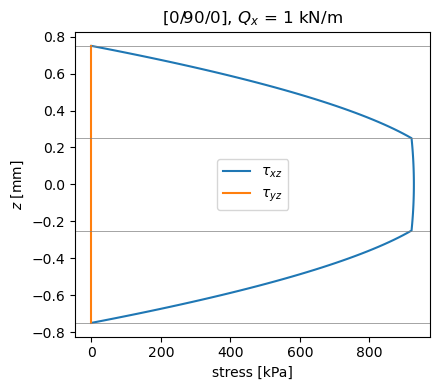
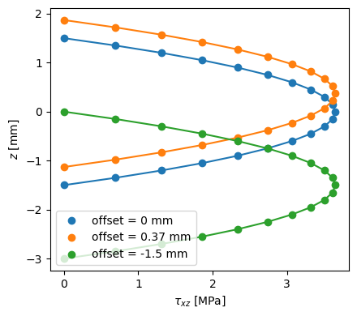

Transverse shear stresses#
The first-order shear deformation theory (FSDT) gives constant transverse shear strains through the thickness, whereas the stresses that satisfy equilibrium vanish at the faces and vary from ply to ply. This example computes those stresses with Laminate.calc_transverse_shear_stress, for given shear forces \(Q_y\), \(Q_x\), and with Laminate.calc_aposteriori_energy, from the strain gradients of an FSDT solution, and verifies them against the equilibrium conditions, the definition
of Ats and the closed form of a homogeneous plate. SI units are used throughout, except in the homogeneous plate, given in N and mm.
Theory#
The distribution is that of the equilibrium approach of Rohwer [1], see Transverse shear stresses, the same that defines Ats for shear_correction='rohwer', see Shear correction. In two cylindrical bending states with constant membrane forces, one with \(M_{xx,x} = Q_x\), \(M_{xy,x} = Q_y\) and one with \(M_{yy,y} = Q_y\), \(M_{xy,y} = Q_x\), the in-plane stresses of the plies follow from the inverse of
the ABD matrix, and the equilibrium equations \(\tau_{xz,z} = -\sigma_{xx,x}\) and \(\tau_{yz,z} = -\sigma_{yy,y}\), integrated from the bottom face, give
with \(f^{(k)}(z)\) quadratic within each ply and continuous at the interfaces. Hence the stresses vanish at both faces, integrate to the shear forces, and their complementary energy is \(Q^T A_{ts}^{-1} Q / 2\).
[1]:
%matplotlib inline
import numpy as np
import matplotlib.pyplot as plt
from composites import laminated_plate, isotropic_plate
def print_table(rows):
"""Print each result, its reference value and their relative difference
``rows`` holds ``(name, value, reference)`` or ``(name, value, reference,
scale)``; the difference is divided by ``scale``, by default the absolute
value of the reference, e.g. the largest term of the matrix when the
reference is zero.
"""
print('%-36s %14s %14s %10s' % ('quantity', 'composites', 'reference',
'rel. diff.'))
for row in rows:
name, value, ref = row[:3]
scale = row[3] if len(row) > 3 else abs(ref)
print('%-36s % 14.6e % 14.6e %10.1e' % (name, value, ref,
abs(value - ref)/scale))
A cross-ply laminate under \(Q_x\)#
The \([0/90/0]\) CFRP plate, plies of 0.5 mm, under the shear force \(Q_x\) alone. The plies at 0 and 90 degrees have no coupling terms \(q_{16L}\), \(q_{26L}\), \(q_{45L}\) in the laminate axes, so \(Q_x\) produces no \(\tau_{yz}\). The stress changes slope at the interfaces, where the in-plane stiffness changes.
[2]:
laminaprop = (142e9, 8.7e9, 0.28, 5.1e9, 5.1e9, 3.2e9)
lam = laminated_plate([0, 90, 0], plyt=0.5e-3, laminaprop=laminaprop)
h = lam.h
Qy, Qx = 0., 1e3 # N/m
zs = np.linspace(-h/2, h/2, 121)
tau = np.array([lam.calc_transverse_shear_stress(z, Qy, Qx) for z in zs])
tau_yz, tau_xz = tau[:, 0], tau[:, 1]
fig, ax = plt.subplots(figsize=(4.5, 4))
ax.plot(tau_xz/1e3, zs*1e3, label=r'$\tau_{xz}$')
ax.plot(tau_yz/1e3, zs*1e3, label=r'$\tau_{yz}$')
for zi in (-h/2, -h/6, h/6, h/2):
ax.axhline(zi*1e3, color='gray', lw=0.5)
ax.set_xlabel('stress [kPa]')
ax.set_ylabel('$z$ [mm]')
ax.set_title('[0/90/0], $Q_x$ = 1 kN/m')
ax.legend()
fig.tight_layout()
plt.show()

Verification: faces, resultants and energy#
The resultants \(\int \{\tau_{yz}, \tau_{xz}\} dz\) and the complementary energy \(\int \tau^T (C_s^{(k)})^{-1} \tau \, dz / 2\) are integrated with the 3-point Gauss-Legendre rule per ply, exact for the integrands, of degree 2 and 4 in \(z\), so they agree with \(Q\) and \(Q^T A_{ts}^{-1} Q / 2\) to round-off. The factor scf_k13 = A55/Abar55 is below one: the constant-strain stiffness \(\bar{A}_{ts}\) overestimates the transverse shear stiffness of the laminate.
[3]:
Q = np.array([Qy, Qx])
xi, w = np.polynomial.legendre.leggauss(3)
zk = -h/2
resultant = np.zeros(2)
Ustar = 0.
for ply in lam.plies:
Cs = np.asarray(ply.get_constitutive_matrix())[3:, 3:]
for x, wi in zip(xi, w):
z = zk + ply.h*(x + 1)/2
t = np.array(lam.calc_transverse_shear_stress(z, Qy, Qx))
resultant += wi*ply.h/2*t
Ustar += wi*ply.h/2*0.5*t @ np.linalg.solve(Cs, t)
zk += ply.h
peak = np.abs(tau_xz).max()
print_table([
('tau_xz at z = -h/2 (scale peak)', tau_xz[0], 0., peak),
('tau_xz at z = +h/2 (scale peak)', tau_xz[-1], 0., peak),
('max |tau_yz| (scale peak)', np.abs(tau_yz).max(), 0., peak),
('int tau_xz dz = Qx [N/m]', resultant[1], Qx),
('int tau_yz dz = Qy (scale Qx)', resultant[0], Qy, Qx),
('energy = Q^T Ats^-1 Q/2 [J/m^2]', Ustar,
0.5*Q @ np.linalg.solve(lam.Ats, Q)),
])
print()
print('scf_k13 = A55/Abar55 = %.4f' % lam.scf_k13)
quantity composites reference rel. diff.
tau_xz at z = -h/2 (scale peak) 0.000000e+00 0.000000e+00 0.0e+00
tau_xz at z = +h/2 (scale peak) 0.000000e+00 0.000000e+00 0.0e+00
max |tau_yz| (scale peak) 7.367018e-11 0.000000e+00 7.9e-17
int tau_xz dz = Qx [N/m] 1.000000e+03 1.000000e+03 2.3e-16
int tau_yz dz = Qy (scale Qx) -9.466331e-30 0.000000e+00 9.5e-33
energy = Q^T Ats^-1 Q/2 [J/m^2] 1.022609e-01 1.022609e-01 0.0e+00
scf_k13 = A55/Abar55 = 0.7298
Homogeneous plate#
For a homogeneous plate the distribution is the parabola
with \(\bar{z}\) measured from the mid-surface, for any offset: it is the integral of \(\tau_{xz,z} = -\sigma_{xx,x}\) for the linear bending stresses of a homogeneous plate, with zero traction at both faces and resultant \(Q_x\). The distribution is computed about the mid-surface, which is why it does not depend on offset; and an isotropic material has no coupling between \(Q_x\) and \(\tau_{yz}\). Its complementary energy, \(\int \tau_{xz}^2/(2G) \, dz =
3 Q_x^2/(5 G h)\), gives the factor 5/6, see Shear correction. Below, a plate 3 mm thick, in N and mm, with three offsets; the markers are the results of composites, the lines the parabola.
[4]:
h = 3.
Qx, Qy = 7.3, -2.1
rows = []
fig, ax = plt.subplots(figsize=(4.5, 4))
for offset in [0., +0.37, -1.5]:
lam = isotropic_plate(thickness=h, E=70e3, nu=0.3, offset=offset)
zs = np.linspace(-h/2, h/2, 21) + offset
zbar = zs - offset
tau = np.array([lam.calc_transverse_shear_stress(z, Qy, Qx) for z in zs])
parab = 3/(2*h)*(1 - 4*zbar**2/h**2)
line, = ax.plot(tau[:, 1], zs, 'o', label='offset = %g mm' % offset)
ax.plot(Qx*parab, zs, '-', color=line.get_color())
rows.append(('offset %g: max |tau_xz - parabola|' % offset,
np.abs(tau[:, 1] - Qx*parab).max(), 0., 3*Qx/(2*h)))
rows.append(('offset %g: max |tau_yz - parabola|' % offset,
np.abs(tau[:, 0] - Qy*parab).max(), 0., 3*abs(Qy)/(2*h)))
ax.set_xlabel(r'$\tau_{xz}$ [MPa]')
ax.set_ylabel('$z$ [mm]')
ax.legend()
fig.tight_layout()
plt.show()
print('differences divided by the peak 3 Q/(2h)')
print_table(rows)

differences divided by the peak 3 Q/(2h)
quantity composites reference rel. diff.
offset 0: max |tau_xz - parabola| 8.881784e-16 0.000000e+00 2.4e-16
offset 0: max |tau_yz - parabola| 1.110223e-16 0.000000e+00 1.1e-16
offset 0.37: max |tau_xz - parabola| 8.881784e-16 0.000000e+00 2.4e-16
offset 0.37: max |tau_yz - parabola| 1.110223e-16 0.000000e+00 1.1e-16
offset -1.5: max |tau_xz - parabola| 8.881784e-16 0.000000e+00 2.4e-16
offset -1.5: max |tau_yz - parabola| 0.000000e+00 0.000000e+00 0.0e+00
A posteriori recovery from an FSDT solution#
From the strain gradients of an actual FSDT solution, Laminate.calc_aposteriori_energy recovers the stresses by integrating the equilibrium equations through the thickness and gives their strain energies. This is the a posteriori approach of Noor and Peters [2], see Transverse shear stresses: the recovered stresses \(\bar\tau_{xz}\), \(\bar\tau_{yz}\) give the transverse shear strain energies per unit area of their Eq. (7),
and equating the FSDT energy \(Q_x^2/(2 k_{13} \bar{A}_{55})\) with \(\bar{U}_{13}\) gives the factor \(k_{13}\) of their Eq. (8).
For a homogeneous plate in cylindrical bending, \(M_{xx} = D
\varepsilon^{(1)}_{xx}\) with \(D = E h^3/(12 (1 - \nu^2))\), so \(M_{xx,x} = Q_x\) is the curvature gradient \(\varepsilon^{(1)}_{xx,x} = Q_x/D\), the entry 3 of eps_x in the order of ABD. The references are the resultant \(Q_x\), the energy \(\bar{U}_{13} = 3 Q_x^2/(5 G h)\) of the parabola, the factor \(k_{13} = Q_x^2/(2 G h \bar{U}_{13}) = 5/6\) (with \(\bar{A}_{55} = G h\)), and \(\bar{U}_{23} = 0\).
[5]:
h, E, nu = 2., 70e3, 0.3
G = E/(2*(1 + nu))
lam = isotropic_plate(thickness=h, E=E, nu=nu)
Qx = 1.7
D = E*h**3/(12*(1 - nu**2))
eps_x = np.zeros(6)
eps_x[3] = Qx/D # M_xx,x = Qx in cylindrical bending
U13, U23, Qy_r, Qx_r = lam.calc_aposteriori_energy(eps_x, np.zeros(6))
print_table([
('recovered Qx', Qx_r[0], Qx),
('U13 = 3 Qx^2/(5 G h)', U13[0], 0.6*Qx**2/(G*h)),
('k13 = Qx^2/(2 G h U13) = 5/6', 0.5*Qx**2/(G*h)/U13[0], 5/6),
('U23 = 0 (scale U13)', U23[0], 0., 0.6*Qx**2/(G*h)),
])
quantity composites reference rel. diff.
recovered Qx 1.700000e+00 1.700000e+00 2.6e-16
U13 = 3 Qx^2/(5 G h) 3.220286e-05 3.220286e-05 0.0e+00
k13 = Qx^2/(2 G h U13) = 5/6 8.333333e-01 8.333333e-01 0.0e+00
U23 = 0 (scale U13) 0.000000e+00 0.000000e+00 0.0e+00
References#
Rohwer, K., Improved Transverse Shear Stiffnesses for Layered Finite Elements, DFVLR-FB 88-32, 1988.
Noor, A. K. and Peters, J. M., A Posteriori Estimates for the Shear Correction Factors in Multi-layered Composite Cylinders, Journal of Engineering Mechanics, 115(6), 1225-1244, 1989. https://doi.org/10.1061/(asce)0733-9399(1989)115:6(1225)